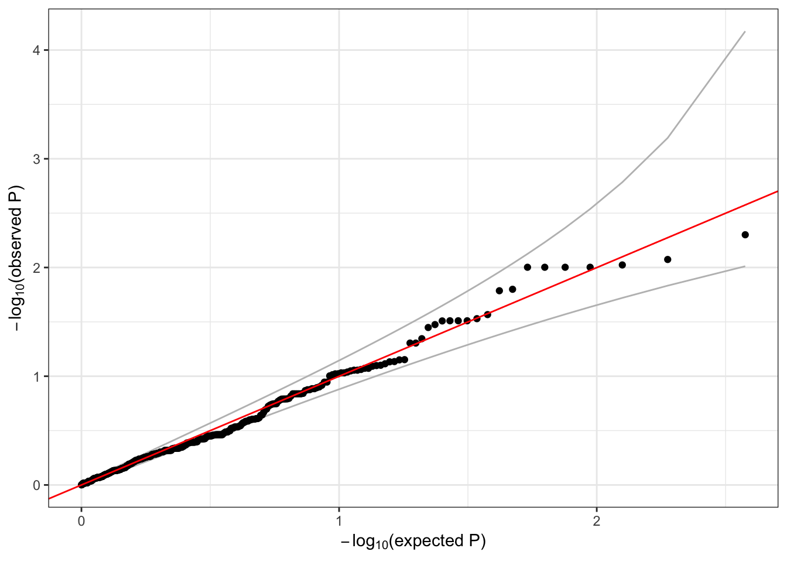

9 Mixed models - Solutions
Run a sliding window test using the mixed model and make a QQ plot.
seqResetFilter(seqData, verbose=FALSE)
iterator <- SeqVarWindowIterator(seqData, windowSize=5000, windowShift=2000, verbose=FALSE)
assoc <- assocTestAggregate(iterator, nullmod, test="Burden", AF.max=0.1, weight.beta=c(1,1))## # of selected samples: 100head(assoc$results)## chr start end n.site n.alt n.sample.alt Score Score.SE
## 1 1 966001 971000 1 3 3 -0.08720781 0.1419917
## 2 1 982001 987000 1 9 9 -0.22392313 0.2316274
## 3 1 1022001 1027000 0 0 0 NA NA
## 4 1 1262001 1267000 0 0 0 NA NA
## 5 1 1468001 1473000 1 1 1 -0.08044594 0.0867442
## 6 1 1732001 1737000 0 0 0 NA NA
## Score.Stat Score.pval
## 1 -0.6141754 0.5390994
## 2 -0.9667385 0.3336748
## 3 NA NA
## 4 NA NA
## 5 -0.9273927 0.3537227
## 6 NA NAhead(assoc$variantInfo)## [[1]]
## variant.id chr pos allele.index n.obs freq weight
## 1 1 1 970546 1 100 0.015 1
##
## [[2]]
## variant.id chr pos allele.index n.obs freq weight
## 1 2 1 985900 1 100 0.045 1
##
## [[3]]
## [1] variant.id chr pos allele.index n.obs
## [6] freq weight
## <0 rows> (or 0-length row.names)
##
## [[4]]
## [1] variant.id chr pos allele.index n.obs
## [6] freq weight
## <0 rows> (or 0-length row.names)
##
## [[5]]
## variant.id chr pos allele.index n.obs freq weight
## 1 5 1 1472676 1 100 0.005 1
##
## [[6]]
## [1] variant.id chr pos allele.index n.obs
## [6] freq weight
## <0 rows> (or 0-length row.names)qqPlot(assoc$results$Score.pval)
seqClose(gds)